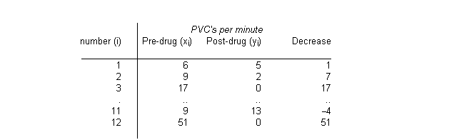

![[hearts0]](hearts0.bmp) Hearts: a mixture model for count
Hearts: a mixture model for countdata
The table below presents data given by Berry (1987) on the effect of a drug used to treat patients with frequent premature ventricular contractions (PVCs) of the heart. 
Farewell and Sprott (1988) model these data as a mixture distribution of Poisson counts in which some patients are "cured" by the drug, whilst others experience varying levels of response but remain abnormal. A zero count for the post-drug PVC may indicate a "cure", or may represent a sampling zero from a patient with a mildly abnormal PVC count. The following model thus is assumed:
x i ~ Poisson( l i ) for all patients
y i ~ Poisson( bl i ) for all uncured patients
P(cure) = q
To eliminate nuisance parameters l i , Farewell and Sprott use the conditional distribution of y i given t i = x i + y i . This is equivalent to a binomial likelihood for y i with denominator t i and probability p = b /(1+b) (see Cox and Hinkley, 1974 pp. 136-137 for further details of the conditional distribution for Poisson variables). Hence the final mixture model may be expressed as follows:
P(y i = 0 | t i ) = q + (1 - q ) (1 - p) t i
P(y i | t i ) = (1 - q ) (t i ! / (y i ! (t i - y i )!)) (p y i (1 - p) (t i - y i ) y i = 1,2,...,t i
The BUGS code for this model is given below:
model
{
for (i in 1 : N) {
y[i] ~ dbin(P[state1[i]], t[i])
state[i] ~ dbern(theta)
state1[i] <- state[i] + 1
t[i] <- x[i] + y[i]
prop[i] <- P[state1[i]]
cumulative.y[i] <- cumulative(y[i], y[i])
}
P[1] <- p
P[2] <- 0
logit(p) <- alpha
alpha ~ dnorm(0,1.0E-4)
beta <- exp(alpha)
logit(theta) <- delta
delta ~ dnorm(0, 1.0E-4)
}
Data ( click to open )
Inits for chain 1 Inits for chain 2 ( click to open )
Results
A 1000 update burn in followed by a further 10000 updates gave the parameter estimates